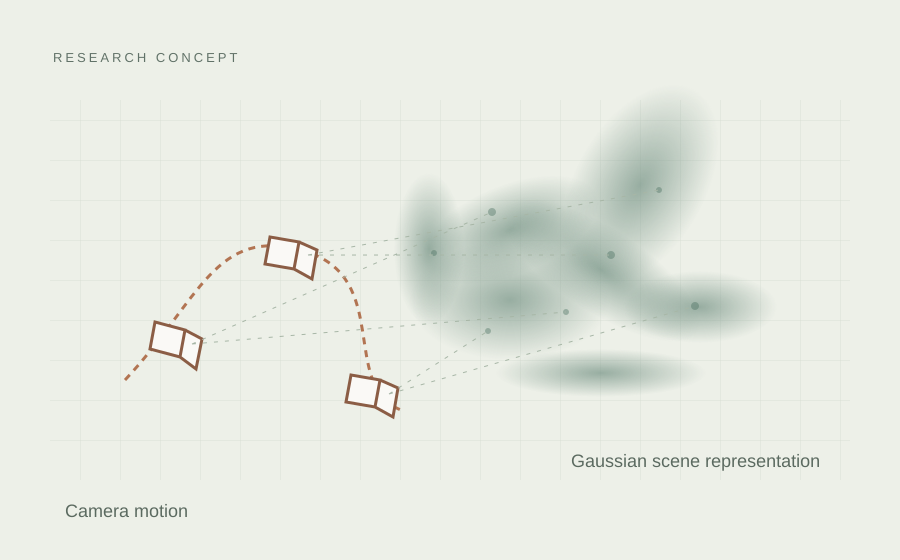

3D vision · Mapping · Ongoing
3D Gaussian Splatting for SLAM
Manuscript in preparationInvestigating 3D Gaussian Splatting for simultaneous localization and mapping. A manuscript is currently in preparation.

Research direction
This ongoing project investigates the use of 3D Gaussian Splatting in simultaneous localization and mapping. The goal is to connect camera motion estimation with a 3D representation of the surrounding scene.
Current status
The manuscript is in preparation. Further method details, experimental results, and publication information will be shared as the work progresses.